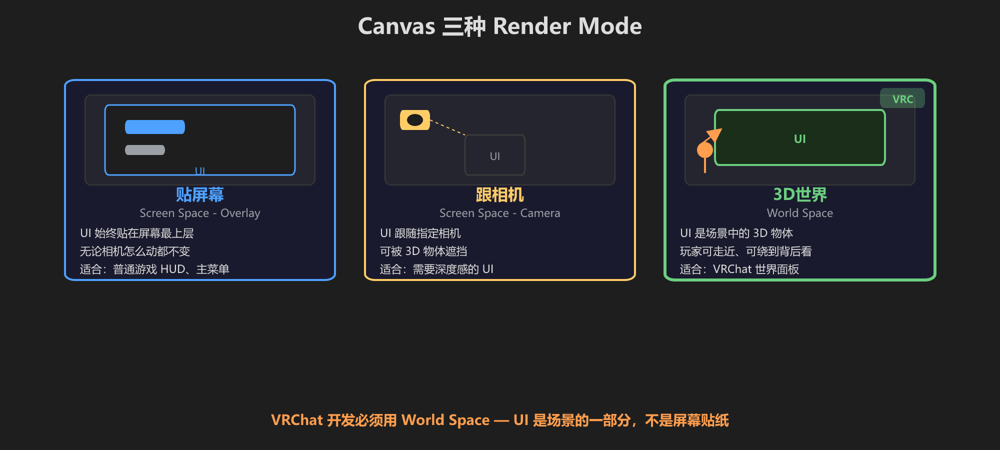
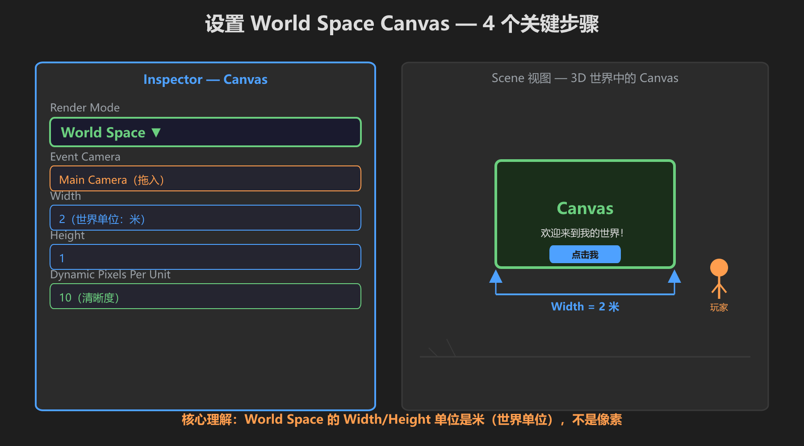
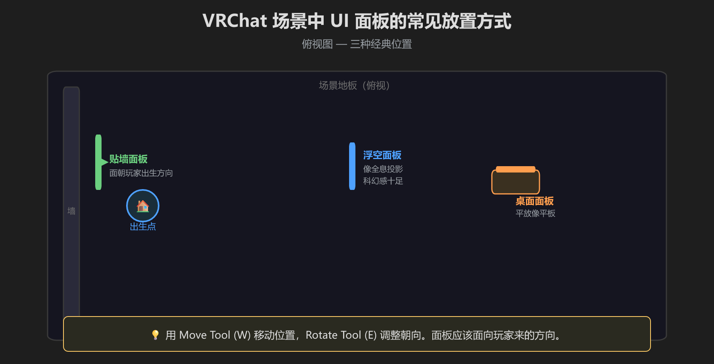
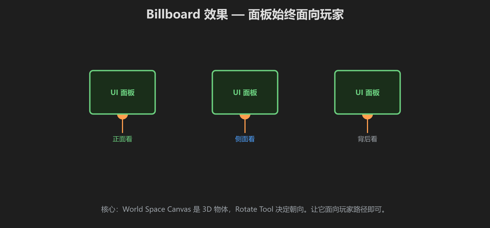
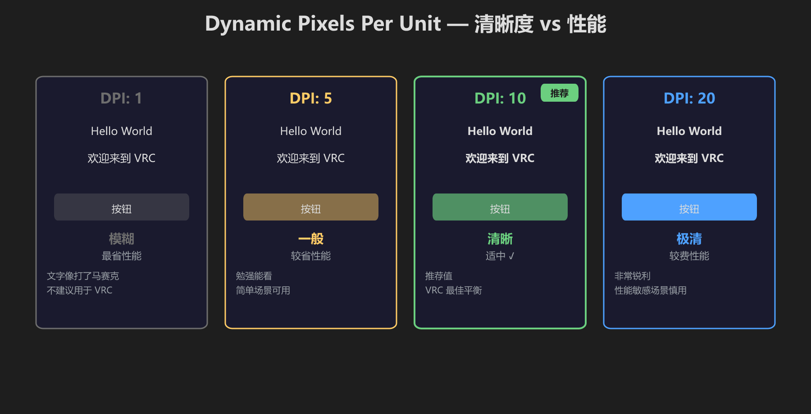
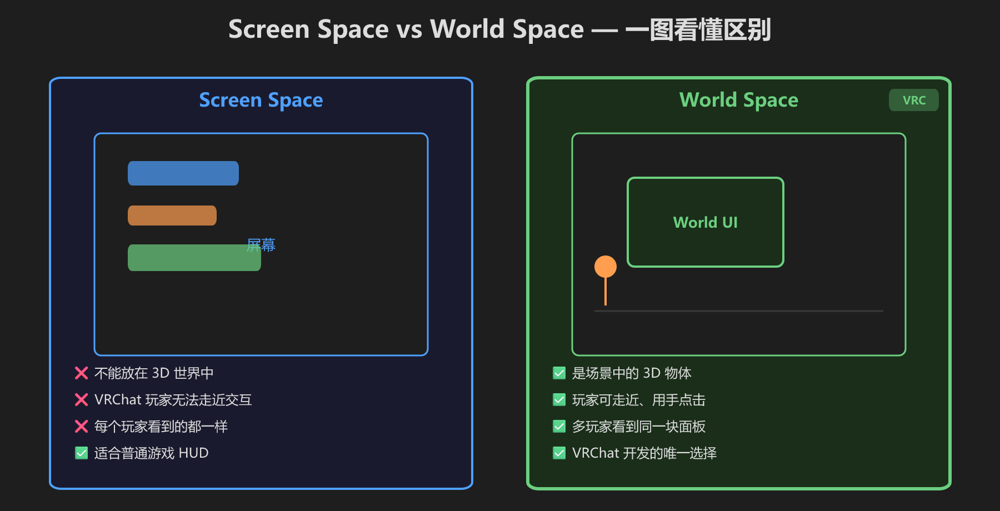

第 7 篇：World Space Canvas — VRC 世界的 UI
前六篇的 UI 贴在屏幕上。这一篇进入 VRC 核心：把 UI 放到 3D 世界里。
🎯 三种 Render Mode 对比

Overlay 贴屏幕 / Camera 跟相机 / World Space 在 3D 世界中 — VRC 必须用 World Space
⚙️ 设置 World Space Canvas

关键步骤：Render Mode → Event Camera → 尺寸（米）→ DPI 清晰度
VRChat 最重要的三个“隐形”条件：① Canvas 的层不能是 UI，要改成 Default（或其他层）；② Canvas 要加 VRC Ui Shape 才能被 VRChat 射线命中；③ 场景里要有 EventSystem，Canvas 上要有 Graphic Raycaster。这些会在第 8 篇完整配置。
尺寸建议：新建的 World Space Canvas 默认 Scale 是 1，代表 1 像素 = 1 米，几乎等于一堵墙。手动配置时把 Canvas 的 Scale 改成 0.01，这样 1 像素 ≈ 1 厘米，面板才像正常 UI。
关键变化
| 变化 | Screen Space | World Space |
|---|---|---|
| 位置单位 | 像素坐标 | 世界单位（米） |
| 大小含义 | 屏幕像素 | 世界中的物理大小 |
| 移动方式 | Rect Tool | Move/Rotate Tool |
| Event Camera | 自动 | 标准 Unity 里通常拖 Main Camera；VRChat 里主要靠 VRC Ui Shape 接管命中 |
World Space Canvas 的 Width=2 意味着面板在 3D 世界里大约 2 米宽。Width=10 会像一堵墙那么大。
📍 场景中的放置方式

俯视图：贴墙、浮空、桌面 — 三种经典位置，用 Move/Rotate Tool 调整
👁️ 面板朝向

面板始终面向玩家 — 用 Rotate Tool 调整朝向
🔍 清晰度控制

Dynamic Pixels Per Unit：1=模糊 / 10=推荐 / 20=极清但费性能
⚡ Screen Space vs World Space

一图看懂：VRChat 开发只有 World Space 一条路
✅ 练手
- 创建 Canvas → Render Mode 改成 World Space
- Width=3, Height=1，Dynamic Pixels Per Unit=10
- Event Camera 拖入 Main Camera
- 在 Canvas 下创建 Text - TextMeshPro
- 运行游戏，旋转视角观察 — UI 像 3D 物体一样固定在世界中
- [ ] Render Mode 是 World Space
- [ ] Scene 视图里 Canvas 是可见的矩形平面
- [ ] 文字从不同角度都能看到
- [ ] 文字不会跟着屏幕移动
- [ ] Canvas 的 Layer 不是 UI（至少改成 Default）
- [ ] Canvas Scale 接近 0.01（1 像素 ≈ 1 厘米），不是 1
目前这个 UI 还不能在 VRChat 里被玩家点击。下一篇加 VRC Ui Shape 和 UdonSharp。